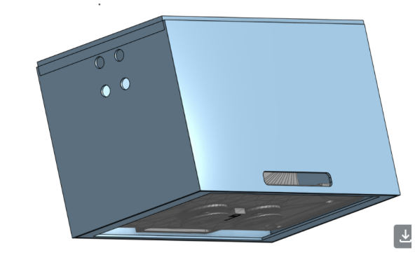
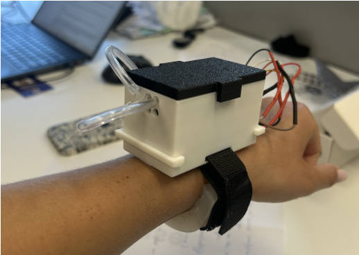
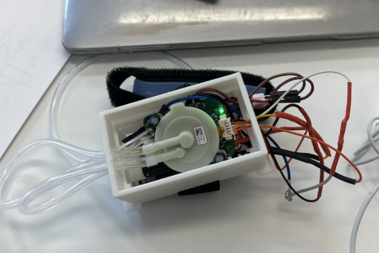

During my research experience at the Computational Medicine Laboratory at NYU, I designed and prototyped a closed-loop wearable medical device featuring a custom soft actuator wrist band with the goal of reducing motion artifacts in biological signals. The system used a soft robotic actuator wristband that dynamically adjusted pressure in response to user motion in order to improve sensor contact and increase signal quality during movement. I designed the wearable enclosure and silicone actuator molds in CAD and fabricated multiple iterations using 3D printing and soft-material prototyping techniques. To actuate the system, I integrated a piezoelectric micropump with an EmotiBit biosensing module capable of collecting multimodal physiological data. I developed and implemented both PID and fuzzy logic control algorithms to regulate the internal pressure of the actuator in real time based on sensor feedback. In addition to the embedded control system, I developed a Python-based user interface to visualize incoming biosignals in real time using an oscilloscope-style display for testing and analysis. I also conducted comparative testing between the wearable system and a standard EmotiBit sensor to evaluate effectiveness. The device was able to successfully reduce signal motion artifacts and, therefore, produce clearer data when the participant was in motion.


